template-fashion-inspired-gown-design-sheet · direction 1 · completedtemplate-watercolor-theme-collage-illustration · direction 2 · completed
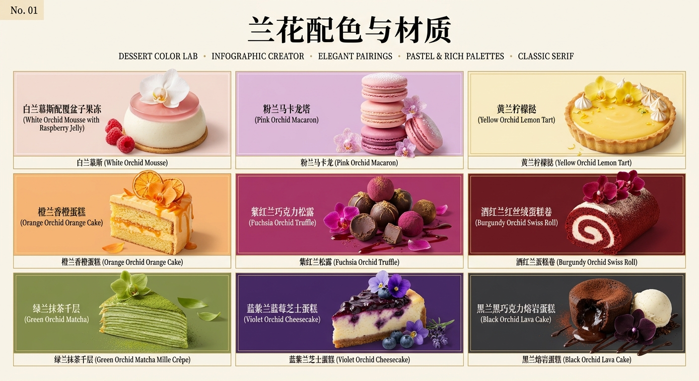
template-dessert-color-lab-infographic · direction 3 · completed
vir-v2-exploration-010
围绕吉伊卡哇主题的治愈阅读空间和生活方式创意探索三个不同的视觉方向，先不要固定成一种风格。
zh · exploration · medium
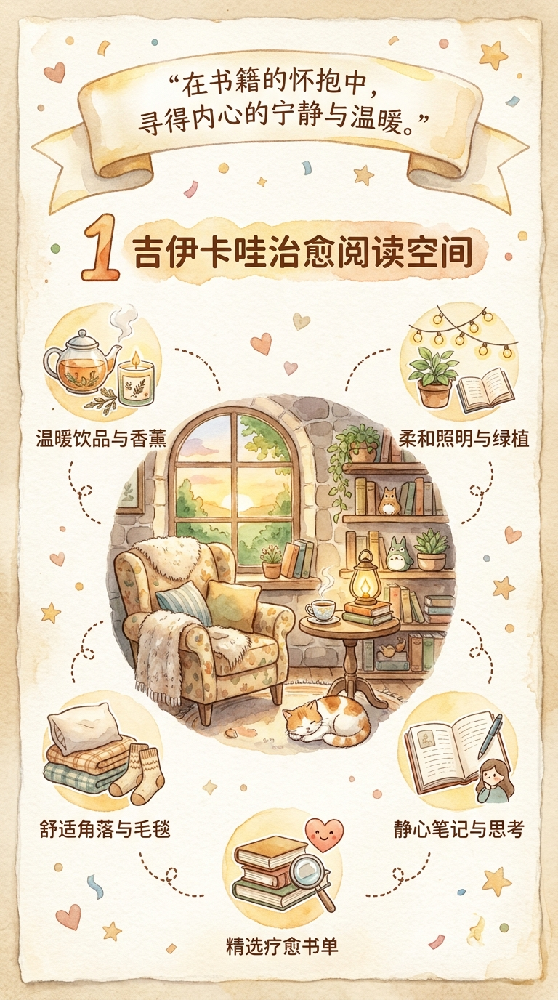
template-lifestyle-watercolor-infographic · direction 1 · completed
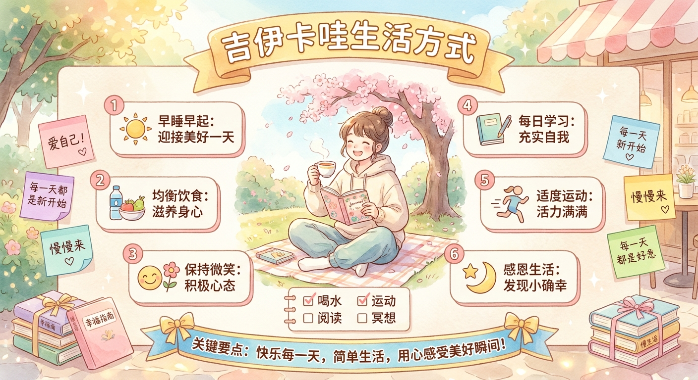
template-lifestyle-habit-infographic · direction 2 · completed
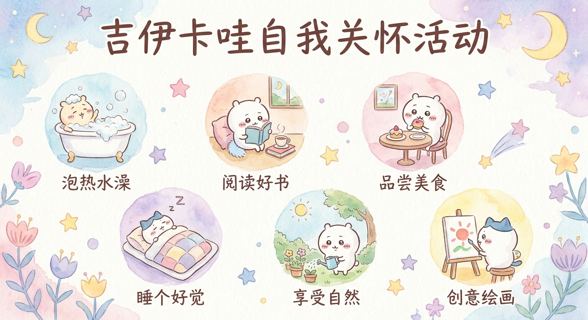
template-self-care-illustration-poster · direction 3 · completed
vir-v2-exploration-011
Explore three visual directions for an informative and inspiring visual story about ginkgo. Vary style and composition. Show different options before I choose.
en · exploration · medium
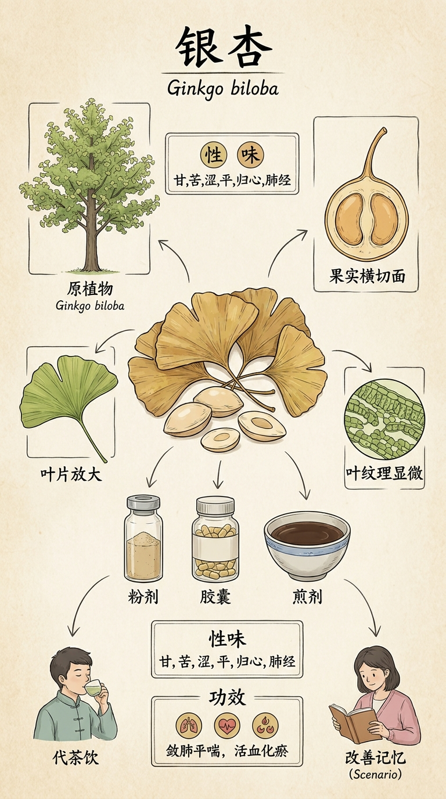
template-herbal · direction 1 · completed
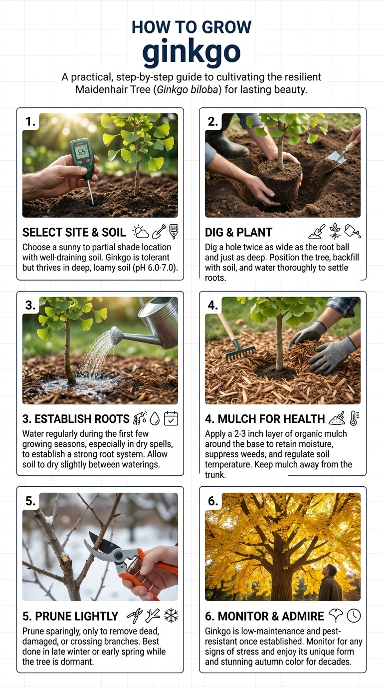
template-gardening-how-to-infographic · direction 2 · completed
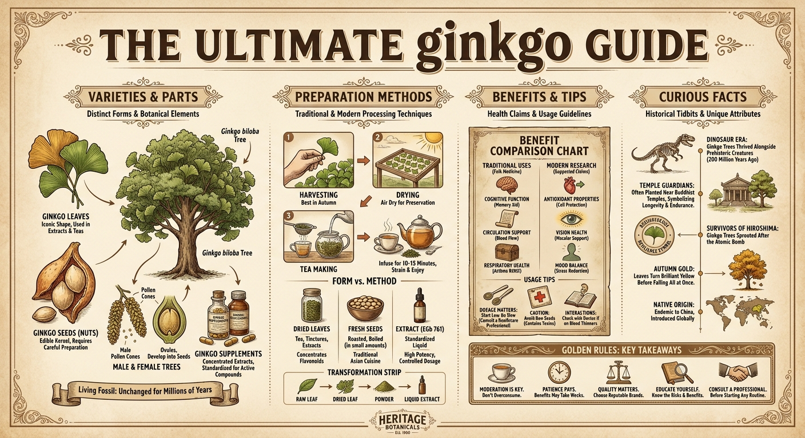
template-vintage-ultimate-guide-infographic · direction 3 · completed
vir-v2-exploration-012
Explore three visual directions for a Shaanxi paper-cutting culture experience for first-time visitors. Vary style and composition. Show different options before I choose.
en · exploration · medium
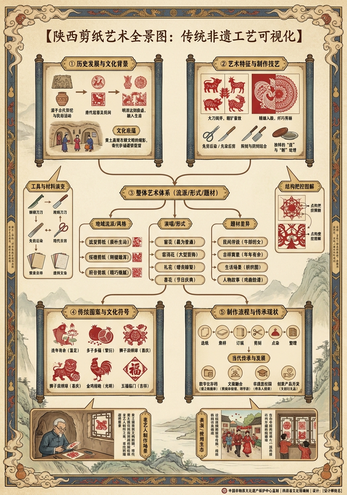
template-intangible-heritage · direction 1 · completedtemplate-cultural-relic-retro-infographic · direction 2 · completedtemplate-ethnic-costume-deconstruction-board · direction 3 · completed
vir-v2-exploration-013
Explore three visual directions for a cozy reading world for young adults, including atmosphere and useful ideas. Vary style and composition. Show different options before I choose.
en · exploration · medium
template-watercolor-theme-collage-illustration · direction 1 · completed
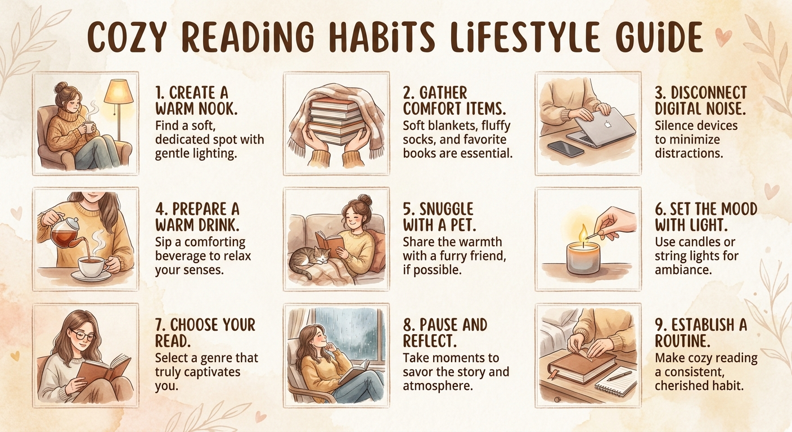
template-home-lifestyle-guide-infographic · direction 2 · completedtemplate-vintage-ultimate-guide-infographic · direction 3 · completed
vir-v2-exploration-014
Explore three visual directions for a calm home-fragrance launch centered on an aroma diffuser. Vary style and composition. Show different options before I choose.
en · exploration · medium
template-home-lifestyle-guide-infographic · direction 1 · completed
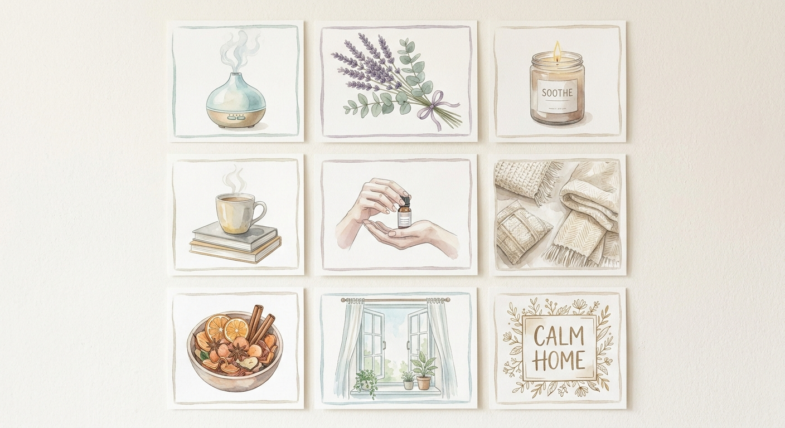
template-watercolor-theme-collage-illustration · direction 2 · completedtemplate-lifestyle-habit-infographic · direction 3 · completed
vir-v2-exploration-015
Explore three visual directions for a Marvel character world focused on personalities and relationship dynamics. Vary style and composition. Show different options before I choose.
en · exploration · medium
template-dual-character-comparison-infographic · direction 1 · completed
Pending / failed
template-fandom-character-grid-poster · direction 2 · failed
vir-v2-exploration-016
Explore three visual directions for a beginner-friendly campaign for learning English homophones and confusing words. Vary style and composition. Show different options before I choose.
en · exploration · medium
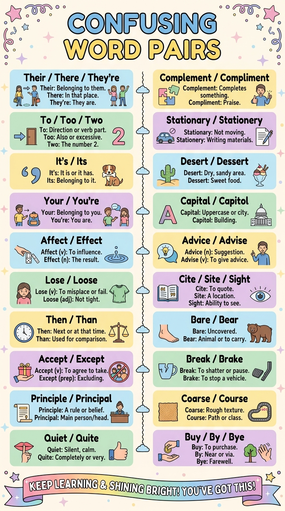
template-english-grammar-wordlist-infographic · direction 1 · completed
vir-v2-exploration-017
Explore three visual directions for a Cuban sandwich visual story for people discovering the dish. Vary style and composition. Show different options before I choose.
en · exploration · medium
template-food · direction 1 · completed
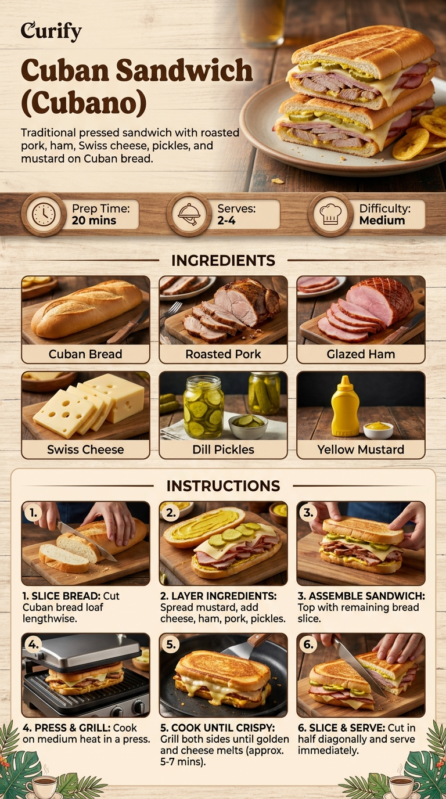
template-premium-recipe-card-infographic · direction 2 · completedtemplate-varieties-food-poster · direction 3 · completed
vir-v2-exploration-018
Explore three visual directions for a Kyoto trip theme that helps visitors discover traditional crafts. Vary style and composition. Show different options before I choose.
en · exploration · medium
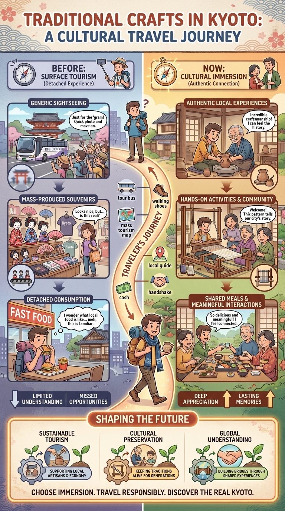
template-cultural-travel-journey-infographic · direction 1 · completed
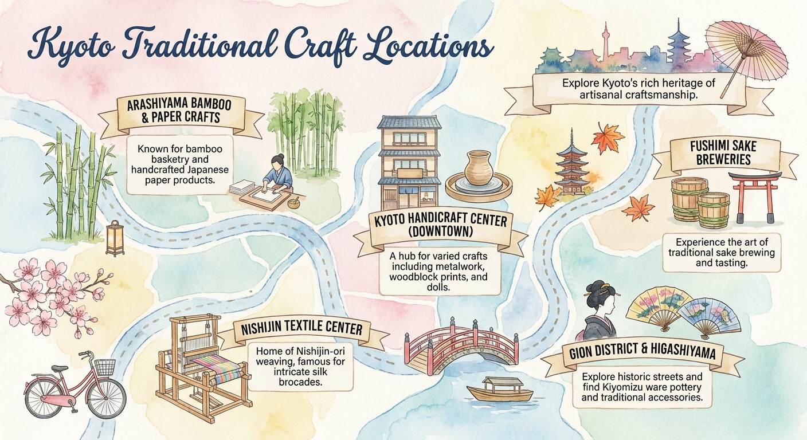
template-tourist-spot-watercolor-map-infographic · direction 2 · completedtemplate-ethnic-costume-deconstruction-board · direction 3 · completed
vir-v2-exploration-019
Explore three visual directions for an orchid-inspired visual world spanning botanical story, colors, materials, and couture. Vary style and composition. Show different options before I choose.
en · exploration · medium
template-fashion-inspired-gown-design-sheet · direction 1 · completed
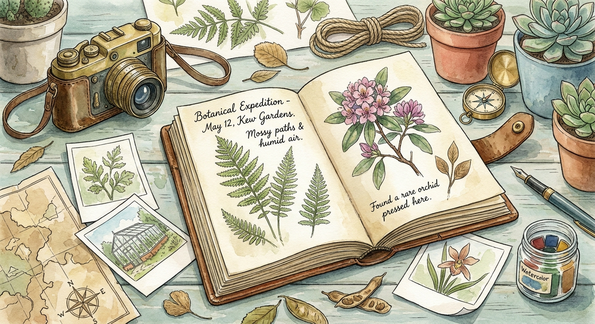
template-watercolor-travel-journal-collage · direction 2 · completedtemplate-dessert-color-lab-infographic · direction 3 · completed
vir-v2-exploration-020
Explore three visual directions for a Chiikawa-themed cozy reading space and lifestyle idea. Vary style and composition. Show different options before I choose.
en · exploration · medium
template-watercolor-theme-collage-illustration · direction 1 · completed
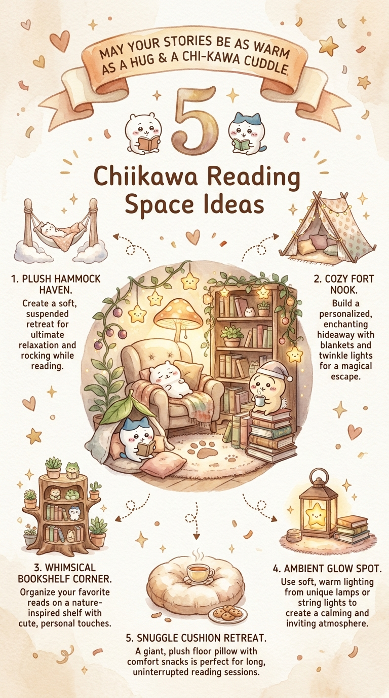
template-lifestyle-watercolor-infographic · direction 2 · completed
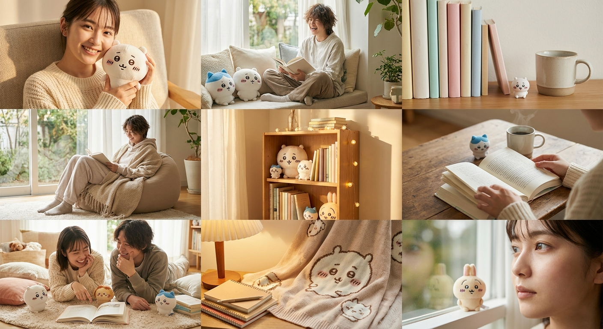
template-lifestyle-photo-grid · direction 3 · completed
vir-v2-exploration-021
围绕兼具知识性和灵感感的银杏视觉故事，explore three distinct visual directions，先别锁定一种 style。 Keep the core idea 一致，但表现路径要不同。
mixed · exploration · high
template-cultural-travel-journey-infographic · direction 1 · completedtemplate-cartoon-action-visual-guide-infographic · direction 2 · completed
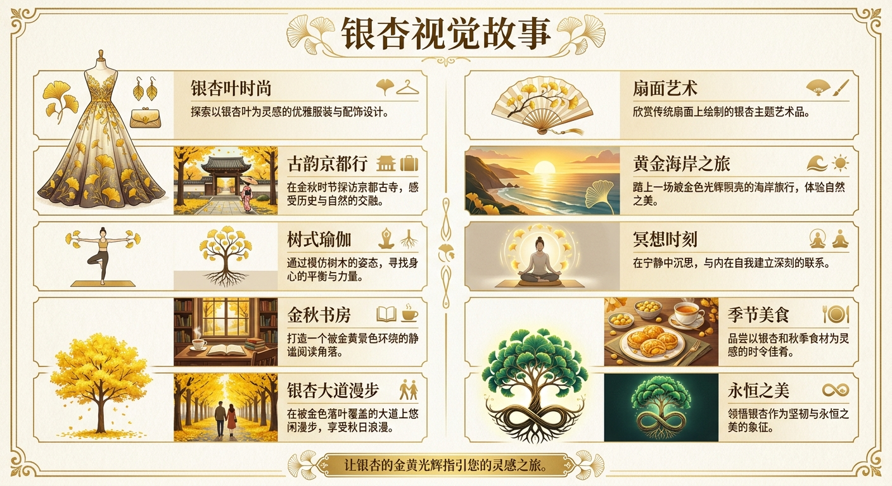
template-top10-visual-guide-infographic · direction 3 · completed
vir-v2-exploration-022
围绕面向初次到访者的陕西剪纸文化体验，explore three distinct visual directions，先别锁定一种 style。 Keep the core idea 一致，但表现路径要不同。
mixed · exploration · high
template-cultural-festival-poster · direction 1 · completed
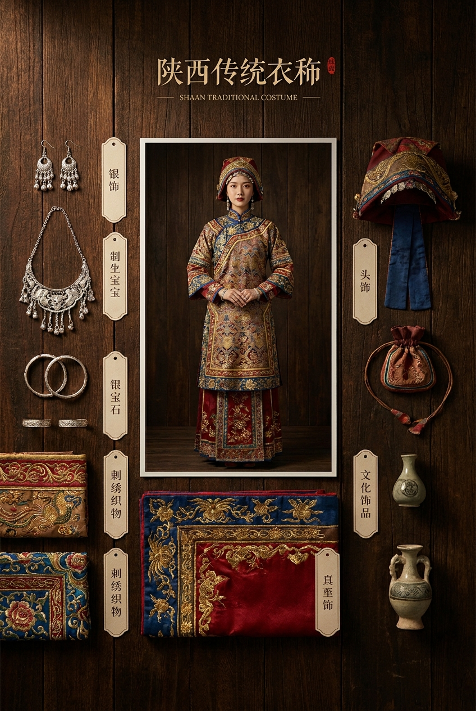
template-ethnic-costume-deconstruction-board · direction 2 · completedtemplate-country-souvenirs-watercolor · direction 3 · completed
vir-v2-exploration-023
围绕面向年轻人的治愈阅读世界，要有氛围也有实用内容，explore three distinct visual directions，先别锁定一种 style。 Keep the core idea 一致，但表现路径要不同。
mixed · exploration · high
Pending / failed
template-book-series · direction 1 · failedtemplate-self-care-illustration-poster · direction 2 · completedtemplate-lifestyle-watercolor-infographic · direction 3 · completed
vir-v2-exploration-024
围绕以香薰机为核心的平静家居香氛发布主题，explore three distinct visual directions，先别锁定一种 style。 Keep the core idea 一致，但表现路径要不同。
mixed · exploration · high
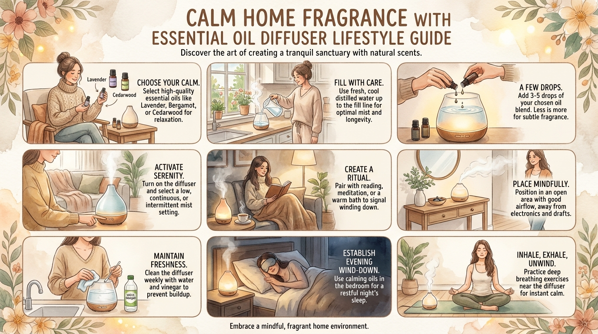
template-home-lifestyle-guide-infographic · direction 1 · completed
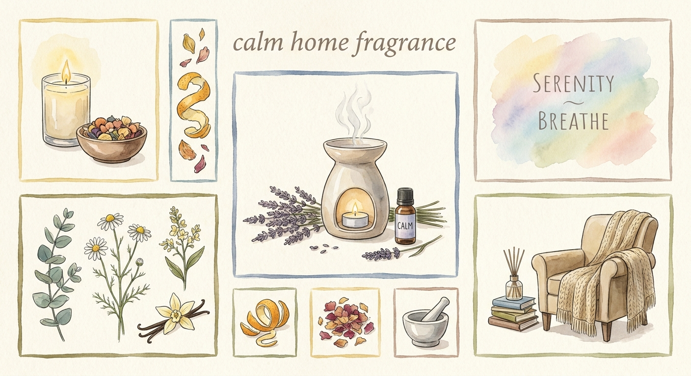
template-watercolor-theme-collage-illustration · direction 2 · completed
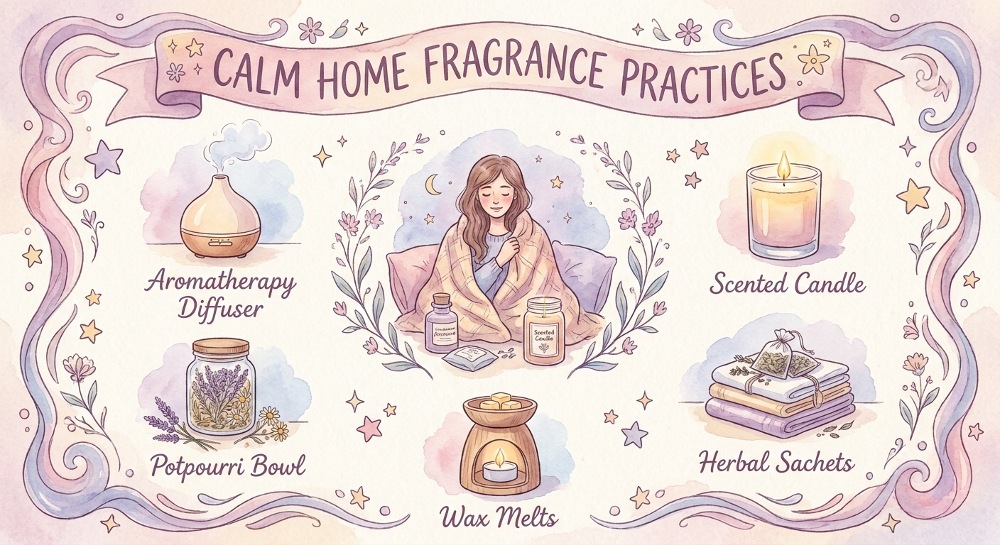
template-self-care-illustration-poster · direction 3 · completed
vir-v2-exploration-025
围绕聚焦人物性格和关系互动的漫威角色世界，explore three distinct visual directions，先别锁定一种 style。 Keep the core idea 一致，但表现路径要不同。
mixed · exploration · high
Pending / failed
template-mbti-generic · direction 1 · failedtemplate-custom-character-card · direction 2 · completedtemplate-dual-character-comparison-infographic · direction 3 · completed
vir-v2-exploration-026
围绕面向初学者的英语同音词和易混词学习主题，explore three distinct visual directions，先别锁定一种 style。 Keep the core idea 一致，但表现路径要不同。
mixed · exploration · high
template-english-homograph-educational-poster · direction 1 · completedtemplate-english-grammar-wordlist-infographic · direction 2 · completed
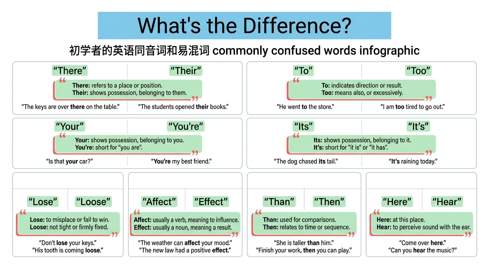
template-english-word-difference-infographic · direction 3 · completed
vir-v2-exploration-027
围绕面向第一次了解古巴三明治的人做一组视觉故事，explore three distinct visual directions，先别锁定一种 style。 Keep the core idea 一致，但表现路径要不同。
mixed · exploration · high
template-cultural-travel-journey-infographic · direction 1 · completed
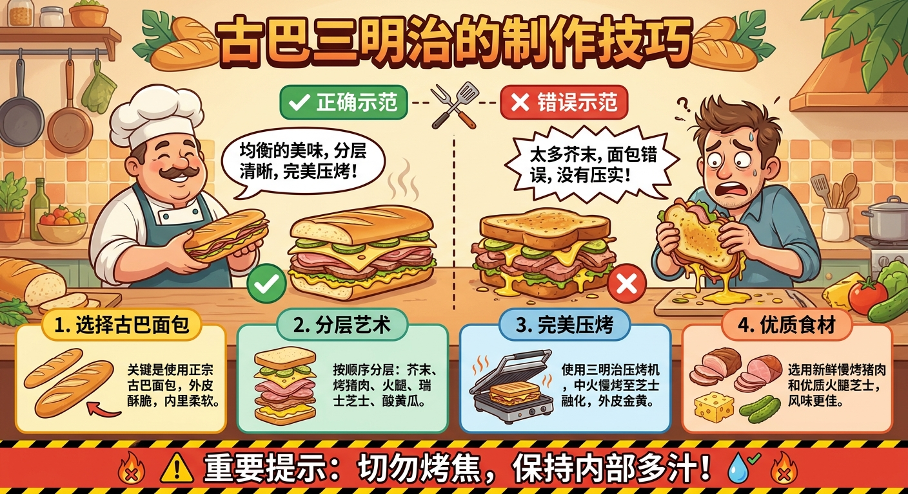
template-food-recipe-tip-infographic · direction 2 · completedtemplate-vintage-ultimate-guide-infographic · direction 3 · completed
vir-v2-exploration-028
围绕帮助旅行者发现京都传统工艺的旅行主题，explore three distinct visual directions，先别锁定一种 style。 Keep the core idea 一致，但表现路径要不同。
mixed · exploration · high
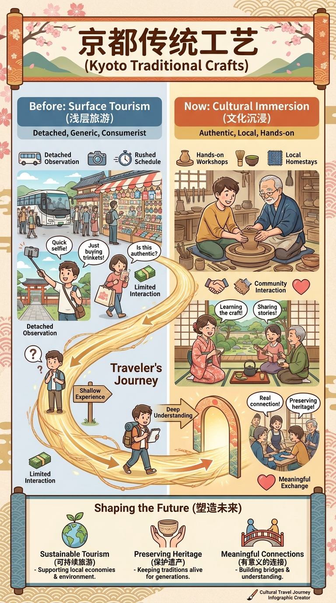
template-cultural-travel-journey-infographic · direction 1 · completedtemplate-tourist-spot-watercolor-map-infographic · direction 2 · completedtemplate-best-cities-travel-infographic · direction 3 · completed
vir-v2-exploration-029
围绕从植物故事延伸到配色、材质和高定设计的兰花视觉世界，explore three distinct visual directions，先别锁定一种 style。 Keep the core idea 一致，但表现路径要不同。
mixed · exploration · high
template-fashion-inspired-gown-design-sheet · direction 1 · completed
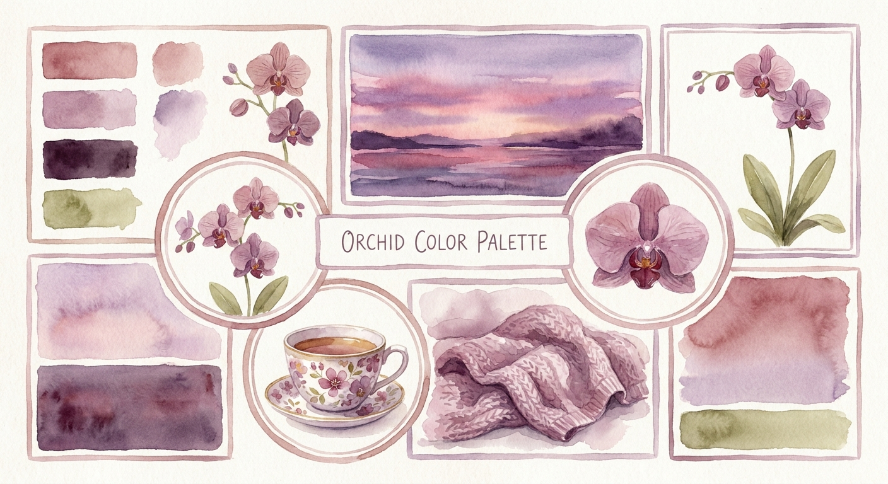
template-watercolor-theme-collage-illustration · direction 2 · completedtemplate-dessert-color-lab-infographic · direction 3 · completed
vir-v2-exploration-030
围绕吉伊卡哇主题的治愈阅读空间和生活方式创意，explore three distinct visual directions，先别锁定一种 style。 Keep the core idea 一致，但表现路径要不同。
mixed · exploration · high
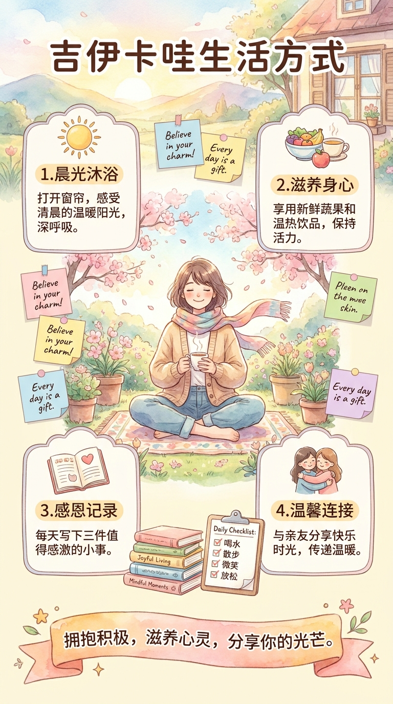
template-lifestyle-habit-infographic · direction 1 · completedtemplate-self-care-illustration-poster · direction 2 · completed